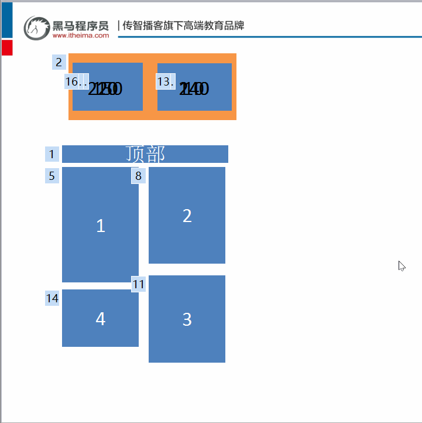
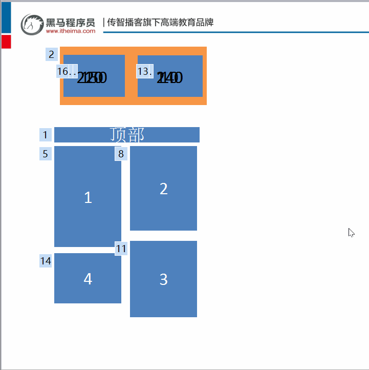

瀑布流
什么是瀑布流?
瀑布值得是从上往下流动的水,并且水量也较大,瀑布流指的是内容,信息,像瀑布一样从上往下进行排布
瀑布:
瀑布流: 示例取自:堆糖网

瀑布流实现原理
瀑布流的核心为:
宽度一致，高度参差不齐新增行的内容，优先添加到
最矮的下方难点: 当我们到了新一行时,如何获取上一行高度最小的行高? 可以定义数组用来保存高度，新增了以后替换数组中原始的高度即可，如下图所示，
橙色的为数组 
瀑布值得是从上往下流动的水,并且水量也较大,瀑布流指的是内容,信息,像瀑布一样从上往下进行排布
瀑布:
瀑布流: 示例取自:堆糖网
瀑布流的核心为:
宽度一致，高度参差不齐新增行的内容，优先添加到最矮的下方
难点:
当我们到了新一行时,如何获取上一行高度最小的行高? 可以定义数组用来保存高度，新增了以后替换数组中原始的高度即可，如下图所示，橙色的为数组 